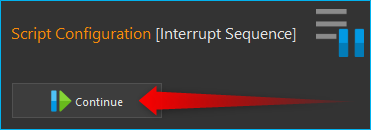
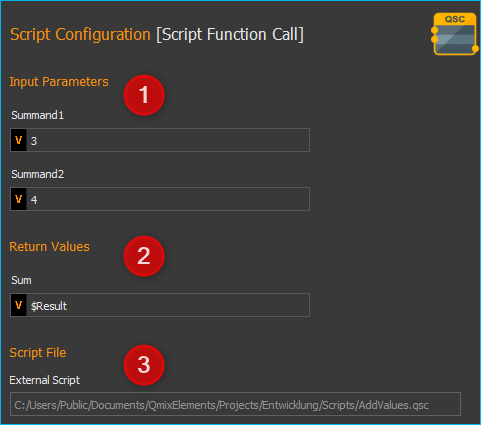
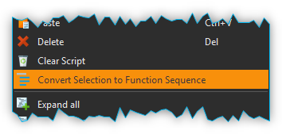
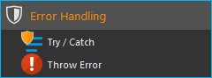
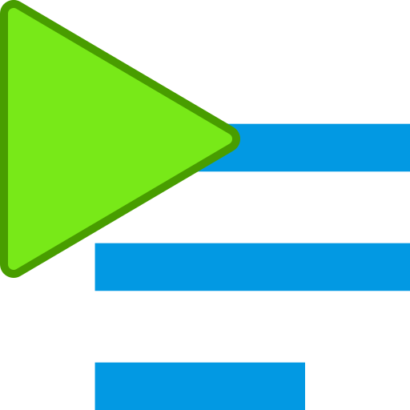
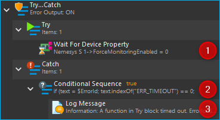

Script Grundfunktionen
Das Script-System enthält bereits eine Reihe von Grundfunktionen oder Basis- Funktionen zur Programmablaufsteuerung. Diese Funktionen sind unabhängig von den vorhandenen Plugins immer verfügbar. Diese Funktionen finden Sie in den Kategorien Core Functions , Function Sequences, und Time Functions.

Kernfunktionen - Core Functions
Übersicht Kernfunktionen
Die Funktionskategorie Core Functions enthält grundlegende Funktionen zur Programmablaufsteuerung und zur Verwendung von Variablen.

Interrupt Script

Mit dieser Funktion können Sie die Skriptausführung unterbrechen. Die Funktion hat die gleiche Wirkung wie das Drücken der Interrupt Schaltfläche in der Toolbar. Der Anwender kann das Script durch Drücken der Continue Schaltfäche in der Toolbar fortsetzen.
Wichtig
Wird die Scriptausführung unterbrochen, werden alle parallel laufenden Sequenzen unterbrochen und es ist kein Kommunikation mit dem Script möglich.
Interrupt Sequence
{kind=link}
Mit dieser Funktion können Sie die Ausführung der Funktionssequenz unterbrechen, in der die Funktion enthalten ist. Werden mehrere Sequenzen mit Hilfe der Parallelen Sequenz parallel ausgeführt, dann wird nur die Sequenz unterbrochen, in der die Funktion enthalten ist.
Wird Interrupt Sequence Funktion ausgeführt, erhalten Sie im Event Log der Anwendung eine Information, das die Sequenz unterbrochen wurde:

Sie können dann doppelt auf den Log-Eintrag klicken, um sich die Funktion und das Bedienpanel anzeigen zur lassen. Danach können Sie die Ausführung mit Mausklick auf Continue im Bedienpanel der Interrupt Sequence Funktion fortzusetzen.
Show Message

Mit dieser Funktion können Sie dem Anwender aus einem Skript heraus eine Nachricht anzeigen und optional die Skriptausführung unterbrechen. Damit ist diese Funktion für Anwendungen geeignet, die ein Eingreifen des Anwenders zu bestimmten Zeitpunkten während der Ausführung eines Skriptes erforderlich machen.
Beim Ausführen kann die Nachricht sowohl in einem Nachrichtenfenster, …

… als auch in der Ereignisanzeige der Software angezeigt werden:
In der Ereignisanzeige werden alle Nachrichten in chronologischer Reihenfolge aufgelistet. In der optionalen Message Box wird stets die letzte Nachricht angezeigt.
Show Message Konfiguration
Bei der Konfiguration der Nachrichtenfunktion, können Sie folgende Punkte konfigurieren:

Geben Sie im Bereich Message den Nachrichtentext ein.
Im Bereich Message Type können Sie Art der Nachricht auswählen. Je nach Typ, wird im Nachrichtenfenster und in der Ereignisanzeige ein entsprechendes Symbol eingeblendet und in der Ereignisanzeige die Nachricht farblich hervorgehoben.
Im Bereich Output stellen Sie ein, ob die Nachricht in einem eigenen Meldungsfenster angezeigt werden soll (Show Message Box) und ob die Nachricht in der Ereignisanzeige erscheinen soll (Write to Event Log).
Wählen Sie aus, ob die Nachricht die Skriptausführung unterbrechen soll. Ist in dem Feld Interrupt script execution ein Häkchen, so wird die komplette Scriptausführung unterbrochen, bis die Programmausführung vom Anwender fortgesetzt wird. Wenn Sie ein Meldungsfenster mit Show Message Box einblenden, sollten Sie diese Option nicht auswählen und stattdessen auf Option ❺ zurückgreifen.
Hier können Sie auswählen, ob die Skriptausführung nach dem Anklicken von OK im Meldungsfenster fortgesetzt wird.
Rich-Text - Aktivieren Sie diese Option, um Ihren Text mit Fettdruck, Kursivschrift, Farben und mehr zu formatieren.
Je nach ausgewählten Optionen verhält sich diese Funktion wie folgt:
Show Message Box |
Write to Event Log |
Inter-rupt Script Exe-cution |
Continue Script if User Clicks OK |
Result |
Eine Nachricht wird in den Event Log geschrieben und dann die nächste Funktion ausgeführt. |
||||
Eine Nachricht wird in den Event Log geschrieben und die Scriptausführung wird unterbrochen. Die Ausführung kann durch Anklicken der Run Script -Schaltfläche fortgesetzt werden. |
||||
Eine Nachricht wird in den Event Log geschrieben, ein Meldungsfenster wird angezeigt und dann die nächste Funktion ausgeführt. |
||||
Ein Meldungsfenster wird angezeigt. Sobald der Anwender auf OK klickt, wird die nächste Scriptfunktion ausgeführt. |
||||
Ein Meldungsfenster wird angezeigt und die Scriptausführung wird unterbrochen. Die Ausführung kann durch Anklicken der Run Script-Schaltfläche fortgesetzt werden. |
Variablen-Inhalt oder Prozessdaten anzeigen
Im Message-Feld der Funktion können Sie auch Variablen oder Prozessdatenbezeichner verwenden. Diese dienen als Platzhalter und werden zur Laufzeit des Scriptes durch den Inhalt der Variablen oder die Prozessdaten eines Gerätes ersetzt. Sobald Sie im Text ein Dollarzeichen ($) eingeben, wird Ihnen eine Liste der verfügbaren Variablen eingeblendet, aus der Sie eine Variable auswählen können (siehe Abbildung unten).

Sie können z.B. in das Message-Feld folgenden Text eingeben:
Der Inhalt der Variablen A ist $A.
Wenn die Variable $A zur Laufzeit den Wert 25,3 enthält, dann wird die
Funktion folgende Nachricht ausgeben:
Der Inhalt der Variablen A ist 25,3.
Tipp
Sie können den Inhalt von Variablen mit Hilfe der Show Message Funktion anzeigen lassen, um so z.B. die Ergebnisse von Berechnungen zu überprüfen.
Tipp
Klicken Sie mit der rechten Maustaste und wählen Sie dann aus dem Kontextmenü den Punkt Insert device property um direkt die Prozessdaten von Geräten auszugeben.
Rich-Text Unterstützung
Wenn Sie die Enable rich text Option aktivieren, erhalten Sie umfassende Möglichkeiten Ihren Nachrichtentext zu formatieren, Listen zu gestalten oder Bilder und Hyperlinks einzufügen. Ist die Option aktiviert, wird Ihnen eine Werkzeugleiste ähnlich wie in einem Textverarbeitungsprogramm eingeblendet:

Wichtig
Rich Text benötigt wesentlich mehr Speicherplatz als normaler Text und kann die Ladezeiten von Skriptdateien verlängern. Schalten Sie diese Option daher nur dann ein, wenn Sie sie wirklich benötigen!
Create Variable

Mit dieser Funktion können Sie eine neue Variable erzeugen und ihr einen Wert zuweisen. Im Konfigurationsbereich dieser Funktion (Abbildung unten) können Sie folgende Parameter eingeben:

Name - geben Sie hier den eindeutigen Variablennamen ein. Details zur Benennung von Variablen finden Sie im Abschnitt Benennung von Variablen.
Type Hint - wählen Sie hier den Typ aus, den Sie in der Variable speichern wollen.
Value - geben Sie hier den Wert ein oder, wenn die Variable vom Typ JavascriptExpression ist, den Ausdruck zur Berechnung der Variable.
Tipp
Um eine falsche Benennung von Variablen zu verhindern, akzeptiert das Name-Feld nur Variablennamen die mit einem Dollarzeichen beginnen.
Variablen Typen
Die Variablen im Script-System sind untypisiert und können unterschiedlichste Werte aufnehmen. So kann z.B. einer Variable bei der Erstellung ein numerischer Wert zugewiesen werden und später in die gleiche Variable ein Text gespeichert werden. Das Type Hint-Feld im Konfigurationsbereich ist lediglich ein Hinweis, welcher Typ gespeichert werden soll und dient dazu, ein entsprechendes Eingabefeld je nach Typ anzuzeigen. Alle Typen, Boolean , Number oder Text lassen sich auch über einen JavaScript Ausdruck eingeben. Die folgende Tabelle ist eine Übersicht einer Auswahl von Daten, die in Variablen gespeichert werden können.
Type Hint |
Daten / Werte |
Beispiele |
|
|---|---|---|---|
|
Boolean |
Boolesche Werte |
true, false |
|
Number |
Numerische Werte |
24, 10, -13.23, -128, 0.001 |
|
Text |
Wörter oder Texte |
Value1, Enter a value |
|
JavaScript |
Geräte Handle (z.B. zur Übergabe von Geräten an Funktionen) |
$$Nemesys_M_1 or $$Nemesys _M_1_ForceSensor |
|
JavaScript |
Array von Zahlen |
[3, 7, 8.5, 12, 23.5] |
|
JavaScript |
Array von Texten |
[User1, User2, User3, User4] |
|
JavaScript |
Array von Geräte Handles |
[$$Nemesys_M_1, $$Nemesys_M_2] |
|
JavaScript |
Ergebnis einer Berechnung |
25 + $TargetPositionX |
|
JavaScript |
Gelesene Geräte- eigenschaften / Prozessdaten |
$$Nemesy s_M_1.DosedVolume |
Berechnung von Werten
Wenn Sie für eine Variable den Typ JavaScript Expression wählen, können Sie im Feld Value einen Ausdruck eingeben, der dann zur Laufzeit berechnet wird. In diesem Ausdruck können Sie auch auf andere Variablen zugreifen und deren Werte in die Berechnung einbinden.Der Zugriff auf Scriptvariablen ist über den Variablennamen, der mit einem Dollarzeichen beginnt möglich.

Tipp
Bei der Eingabe von Berechnungen mit Variablen unterstützt Sie die Autovervollständigung bei der Auswahl von Variablen, die bereits erstellt wurden.
Sie können in einen JavasScript Ausdruck auch direkt die Eigenschaften /
Prozessdaten eines Gerätes lesen und in eine Berechnung einbinden. Im
folgenden Beispiel wird der Variable $Flow ❶ berechnet als ein
zwanzigstel der Geräteeigenschaft $$Nemesys_M_1.MaxFlow ❷.
Geräteeigenschaften (Device Properties) können sie einfach über das
Kontextmenü (Insert device property) ❸ hinzufügen.
Tipp
Klicken Sie mit der rechten Maustaste in das Eingabefeld und wählen Sie dann aus dem Kontextmenü den Punkt Insert device property um in der Berechnung direkt auf die Prozessdaten von Geräten zuzugreifen.
Über das Kontextmenü können Sie auch Gerätereferenzen (Device
References) in den JavaScript Code einfügen. Damit ist es möglich,
Gerätereferenzen (z.B. $$Nemesys_M_1) oder Arrays mit
Gerätereferenzen (z.B. [$$Nemesys_M_1, $$Nemesys_M_2, $$Nemesys_M_3])
in Variablen speichern. Im folgenden Beispiel wird
eine Referenz des Drucksensors $$QmixP1_Pressure1 in der
Variable $PressureSensor gespeichert.

Die Bezeichner für Gerätereferenzen beginnen wie Device Properties mit zwei Dollarzeichen, bestehen aber nur aus dem Gerätenamen ohne zusätzliche Geräteeigenschaft.
Operatoren
Folgende Operatoren stehen für Berechnungen zur Verfügung:
Arithmetische Operatoren |
Beispiel |
|
|---|---|---|
+ |
Addiert zwei Werte |
|
- |
Subtrahiert einen Wert von einem anderen |
|
* |
Multipliziert zwei Werte |
|
/ |
Dividiert zwei Werte |
|
% |
Dividiert zwei Werte und gibt den Rest zurück |
|
Logische Operatoren |
Beispiel |
|
|---|---|---|
== |
Prüft, ob die Werte gleich sind |
|
!= |
Prüft, ob die Werte ungleich sind |
|
> |
Prüft, ob der erste Wert größer ist als der zweite. |
|
< |
Prüft, ob der erste Wert kleiner ist als der zweite. |
|
≥ |
Prüft, ob der erste Wert größer oder gleich dem zweiten ist. |
|
≤ |
Prüft, ob der erste Wert kleiner oder gleich dem zweiten ist |
|
&& |
Verknüpft zwei Aussagen durch logisches AND (und) |
|
|| |
Verknüpft zwei Werte durch logisches OR (oder) |
|
! |
Verknüpft einen Wert mit logischem NOT (nicht) |
|
Text Operatoren |
Beispiel |
|
|---|---|---|
+ |
Fügt zwei Texte zusammen |
|
Operatorenrangfolge
Unter den Operatoren gibt es eine festgelegte Rangordnung. Wenn Sie komplexe Rechenoperationen durchführen oder mehrere Bedingungen miteinander verknüpfen, gilt bei der internen Auflösung solcher komplexen Ausdrücke die folgende Rangordnung:
Rangfolge |
Operatoren |
|---|---|
1 |
|| |
2 |
&& |
3 |
== != |
4 |
< ≤ > ≥ |
5 |
+ - |
6 |
\ / % |
7 |
! |
8 |
() |
Mit Hilfe von Klammern, die absichtlich die unterste Rangstufe in der Prioritätshierarchie darstellen, können Sie die Rangfolge bei den Operatoren beeinflussen und Ausdrücke so bewerten, wie Sie es wünschen.
Beispiele
Nachfolgend finden Sie einige Beispiele zur Berechnung von Variablen und für unterschiedliche JavaScript Ausdrücke:
Beispiel 1
Sie möchten die Werte zweier Variablen a und b miteinander addieren und das Ergebnis in einer dritten Variable c speichern:
Name: |
$c |
JavaScript: |
|
Beispiel 2
Sie möchten eine Variable Speed mit 5 multiplizieren und den Wert in der gleichen Variable wieder speichern:
Name: |
$Speed |
JavaScript: |
|
Beispiel 3
Sie möchten die beiden booleschen Variablen SwitchedOn und CheckOk miteinander durch UND Verknüpfen und in der Variable TurnOn speichern:
Name: |
$TurnOn |
JavaScript: |
|
Beispiel 4
Sie möchten der Variablen $Flow die aktuelle Flussrate der Pumpe Nemesys_M_1 zuweisen.
Name: |
$Flow |
JavaScript: |
|
Beispiel 5
Sie möchten ein Array erstellen mit 4 Flussraten und dieses der Variablen $TargetFlows zuweisen.
Name: |
$TargetFlows |
JavaScript: |
|
Beispiel 6
Die Variable $TargetFlows enthält ein Array mit 4 numerischen Werten. Sie möchten den dritten Wert im Array der Variable $NextFlow zuweisen. Der Index für den Array Zugriff wird von 0 beginnend nummeriert. D.h. zum Zugriff auf das dritte Element ist der Index 2.
Name: |
$NextFlow |
JavaScript: |
|
Beispiel 7
Sie möchten in der Variable $Pressures ein Array mit den beiden aktuellen Werten der Drucksensoren QmixP_1_Pressure1 und QmixP_1_Pressure2 speichern.
Name: |
$Pressures |
JavaScript: |
|
Beispiel 8
Sie möchten in der Variable $ProcessPump eine Gerätereferenz (Device Reference) der Nemesys_M_1 Pumpe speichern um diesen später an eine Funktion übergeben zu können.
Name: |
$ProcessPump |
JavaScript: |
|
Set Variable
{kind=link}
Mit dieser Funktion können Sie einer bereits vorhandenen Variable einen neuen Wert zuweisen. Die Konfiguration der Variablen entspricht der Funktion Variable erzeugen.

Tipp
Bei der Eingabe des Namens unterstützt Sie die Autovervollständigung mit einer Auswahl von Variablen die bereits erstellt wurden.
Variable Declaration Sequence
{kind=link}
Mit der Variable Declaration Sequence können Sie Variablen, die Sie mit Variable erzeugen oder Eigenschaftsvariable erzeugen deklarieren zusammenfassen. Damit können Sie die Übersichtlichkeit Ihres Scriptes erhöhen. Statt vieler einzelner Variablen ist nur noch die Variablendeklarationssequenz sichtbar und erst beim Aufklappen dieser Sequenz, sehen Sie die deklarierten Variablen.
Alle Variablen sind auf der Ebene sichtbar, in der sich die Deklarationssequenz befindet. D.h. die Variablen innerhalb der Sequenz werden so deklariert, als würden Sie sich auf der Ebene der Deklarationssequenz befinden.

Mit der Sequenz können Sie auch Variablen die logisch zusammengehören gruppieren und es so für den Anwender einfacher machen, bestimmte Variablen zu finden.
User Input

Diese Funktion ermöglicht das Einlesen eines einzelnen Eingabewertes (Zahl oder Text) in eine bestehende Variable. Im Konfigurationsbereich (siehe Abbildung unten) können Sie folgende Parameter konfigurieren:

Label Text - Hier geben Sie einen Text an, der dem Anwender bei der Ausführung der Funktion über dem Eingabefeld als Beschriftung und erklärender Text angezeigt wird.
Variable - In diesem Feld legen Sie die Variable fest, die den vom Anwender eingegebenen Wert speichern soll. Gleichzeitig wird Wert der Variable auch als Ausgangswert bei der Anzeige des Eingabedialogs verwendet. D.h., wenn Sie die Variable z.B. vorher mit dem Wert 5 initialisieren, wird bei der Anzeige des Eingabedialogs der Wert 5 als Standardwert angezeigt.
Type Hint - Den Eingabetyp, Zahl oder Text, legen Sie hier fest. Je nach gewähltem Wert, akzeptiert der Eingabedialog nur bestimmte Werte.
Allow Cancel - Ist dieses Auswahlfeld aktiv, dann enthält der angezeigte Dialog eine Cancel Schaltfläche, die den Abbruch der Eingabe ermöglicht.
Rich Text - Aktivieren Sie diese Option, um Ihren Text mit Fettdruck, Kursivschrift, Farben und mehr zu formatieren.
Test Input Dialog - Durch Anklicken dieser Schaltfläche können Sie den Eingabedialog testweise anzeigen, um zu prüfen, wie der Anwender den Eingabedialog später bei der Ausführung des Scriptes sehen wird (siehe Abbildung unten).
Input Dialog
Input Dialog mit Cancel Schaltfläche


Wird während der Scriptausführung die Eingabe mit OK bestätigt, dann enthält die Variable den Wert, der vom Anwender eingegeben wurde. Wir der Dialog mit Cancel abgebrochen, dann enthält die Variable einen undefinierten Wert. In JavaScript, z.B. in einer Conditional Sequence, können Sie dann wie folgt testen, ob der Wert undefiniert ist:
$InputVariable === undefined
Im folgenden Beispielscript wird getestet, ob der Anwender den Eingabedialog abgebrochen hat. In diesem Fall wird eine entsprechende Meldung in den Event-Log geschrieben:

Rich Text Unterstützung
Wenn Sie die Rich Text Option aktivieren, erhalten Sie umfassende Möglichkeiten Ihren Label-Text zu formatieren, Listen zu gestalten oder Bilder und Hyperlinks einzufügen. Ist die Option aktiviert, wird Ihnen eine Werkzeugleiste ähnlich wie in einem Textverarbeitungsprogramm eingeblendet:

Wichtig
Rich Text benötigt wesentlich mehr Speicherplatz als normaler Text und kann die Ladezeiten von Skriptdateien verlängern. Schalten Sie diese Option daher nur dann ein, wenn Sie sie wirklich benötigen!
Script Function Call

Script Function Calls ermöglichen Ihnen die Einbindung eigener Scripte als Funktionen. D.h. so wie Sie in anderen Programmiersprachen Funktionen als wiederverwendbare Bausteine erstellen, können Sie auch im Scriptsystem eigene Funktionen in Form externer Scripte aufrufen.
Externe Scriptfunktionen können über 0 - 10 Eingabe Parameter (Input Parameters) ❶ verfügen und über 0 - 10 Rückgabewerte (Return Values) ❷. Damit können Sie Werte an das Script übergeben (z.B. numerische Werte oder Variablen) und Rückgabewerte des Scriptes lesen und in Scriptvariablen speichern. Unter Script File ❸ wird Ihnen der Pfad zur externen Scriptdatei angezeigt, die beim Aufruf ausgeführt wird.
Im Abschnitt Eigene Scriptfunktionen programmieren finden Sie eine ausführliche Anleitung zur Erstellung eigener Scriptfunktionen.
Funktionssequenzen - Function Sequences
Übersicht Funktionssequenzen

Die Funktionskategorie Function Sequences enthält verschiedene Arten von Funktionssequenzen. Funktionssequenzen sind Scriptfunktionen, die eine Reihe (Sequenz) von Funktionen aufnehmen können. Wird eine Funktionssequenz ausgeführt, bedeutet das, dass alle Scriptfunktionen die sich in dieser Sequenz befinden ausgeführt werden.
Counting Loop
{kind=link}
Diese Funktion ermöglicht die mehrfache Ausführung von Funktionen innerhalb der Schleife. Die Anzahl der Wiederholungen ist dabei über die Anzahl der Schleifenzyklen (Loop Cycles) im Konfigurationsbereich festlegbar.
Die Anzahl der Schleifendurchläufe kann entweder explizit über eine Zahl oder implizit über den Name einer Variablen definiert werden (Abbildung unten, ❶), die die Anzahl der Durchläufe enthält.

Zusätzlich können Sie einen Namen für die Zählvariable (Counter Variable) der Schleife vergeben (Abbildung oben, ❷). Innerhalb der Schleife können dann Funktionen, die Variablen unterstützen, über diesen Namen auf den aktuellen Wert der Zählvariable zugreifen und diesen, z.B., für weitere Berechnung verwenden.
Wichtig
Die Zählvariable einer Zählschleife beginnt stets bei dem Wert 0 zu zählen. D.h. bei einer Zyklenzahl von 10 Schleifenzyklen, enthält die Zählvariable in den einzelnen Durchläufen aufsteigende Werte von 0 bis 9.
Wichtig
Sie sollten stets eine Verzögerungsfunktion in eine Schleife einfügen. Ansonsten kann die Ausführung zu einer 100% Auslastung des Prozessors und damit zur Blockierung der grafischen Oberfläche führen. Eine kleine Verzögerungszeit von 10ms – 100ms sind bereits ausreichend.
Mit Hilfe der Zählvariable (Counter Variable) können Sie die Schleife auf vorzeitig beenden (abbrechen). Wenn Sie innerhalb der Schleife mit Hilfe der Funktion Wert einer Variable setzen den Wert der Zählvariable auf einen Wert >= der Anzahl von Schleifenzyklen setzen (Loop Cycles), wird die Schleife beim nächsten Durchlauf beendet.
Tipp
Sie können die Zählschleife vorzeitig durch das Ändern der Zählvariable beenden.
Conditional Loop
Einführung

Diese Schleifenfunktion dient zur mehrfachen Ausführung von Funktionen innerhalb der Schleife, solange die Bedingung im Kopf der Schleife wahr ist. D.h. die Abbruchbedingung im Schleifenkopf wird vor jedem Schleifendurchlauf geprüft und die Schleifenausführung wird beendet oder übersprungen, wenn die Abbruchbedingung nicht wahr ist.
In Textform lässt sich die Funktionsauführung wie folgt beschreiben:
„Wiederhole die Ausführung der Funktionen innerhalb der Schleife, solange die Schleifenbedingung wahr ist.“
Es gibt zwei Möglichkeiten, die Parameter für die Schleifenprüfung festzulegen: den einfachen Modus und den JavaScript-Ausdruck.
Konfiguration - einfacher Modus
Im Konfigurationsbereich können Sie im einfachen Modus die Schleifenbedingung bequem über die vorhandenen Bedienelemente eingeben. Folgende Parameter können eingegeben werden:

JavaScript Expression – diese Schaltfläche dient zum Umschalten zwischen dem einfachen und dem erweiterten Eingabemodus.
Name – geben Sie hier den Namen der Variablen ein, deren Wert in der Bedingung verglichen oder geprüft werden soll. Die Variable steht auf der linken Seite der Vergleichsbedingung und muss mit einem Dollar-Zeichen
$(sowie$FlowRate) beginnen.Type – hier können Sie den Typ der Variablen wählen und damit die Bedienelemente im Bereich Condition umschalten.
Comparison operator – mit der Auswahlbox können Sie bequem den Vergleichsoperator auswählen.
Comparison condition – geben Sie hier einen numerischen Wert oder eine Variable ein, mit der die Variable aus ❷ verglichen werden soll.
Beispielkonfiguration (einfacher Modus)
Im folgenden Beispiel wird in der Schleifenbedingung geprüft, ob die
Variable $Position kleiner oder gleich 25.000,31 ist.
Variablenname ❷ |
Typ ❸ |
Operator ❹ |
Bedingung ❺ |
|---|---|---|---|
$Position |
Number |
≤ |
25.000,31 |
Im Scripteditor wird der eingegebene Ausdruck komplett angezeigt:

Dieser Ausdruck bewirkt,
dass die Schleife solange ausgeführt wird, wie der Wert der Variablen
$Position kleiner oder gleich ist 25.000,31.
Konfiguration - erweiterter Modus
Während der einfache Modus dem Benutzer eine grafische Benutzeroberfläche bietet, ermöglicht der JavaScript-Modus das direkte Einfügen eines JavaScript-Ausdrucks mit Variablennamen sowie mathematischen und logischen Ausdrücken.
Im erweiterten Modus wird ein JavaScript Editor angezeigt mit
Syntaxhervorhebung und Zeilennummern. Hier können Sie die
Schleifenbedingung als JavaScript Ausdruck eingeben. D.h. Sie können,
wie in der Abbildung oben, auch komplexere Rechenoperationen in der
Prüfbedingung durchführen oder mehrere Variablen in die Prüfbedingung
einbinden. Auch JavaScript Funktionen, wie hier z.B.
Math.round() können verwendet werden.
Wichtig
Sie sollten stets eine Verzögerungsfunktion in eine Schleife einfügen. Ansonsten kann die Ausführung zu einer 100% Auslastung des Prozessors und damit zur Blockierung der grafischen Oberfläche führen. Eine kleine Verzögerungszeit von 10ms - 100ms sind bereits ausreichend.
Function Sequence

Die Funktionssequenz dient zur Gruppierung von Funktionen. Dies erleichtert die Navigation im Funktionsbaum, da die Funktionssequenz ggf. zugeklappt werden kann. Weiterhin erleichtert die Sequenz auch das Kopieren von Funktionsabläufen, die aus mehreren Funktionen bestehen. Wenn Sie, z.B., mehrere Funktionen, die nacheinander ausgeführt werden, kopieren möchten, um sie an verschiedenen Stellen im Programm erneut zu verwenden, dann verschieben Sie diese in eine leere Funktionssequenz. Anschließend können Sie bequem die gesamte Sequenz verschieben oder kopieren.

Funktionssequenz benennen
Es ist möglich, einer Funktionssequenz einen neuen und damit eindeutigen Namen zu geben, der dann im Funktionsbaum angezeigt wird. Dies erleichtert die Navigation, wenn mehrere Funktionssequenzen vorhanden sind. Klicken Sie dafür einfach doppelt auf den Funktionsnamen Caption Field (Abbildung oben ❶).
Funktionsparameter und Rückgabewerte hinzufügen
Sie können aus der Funktionssequenz heraus auf Variablen zugreifen, die außerhalb der Funktionssequenz definiert sind. Alternativ können Sie aber auch Funktionsparameter und Rückgabewerte definieren. Funktionsparameter sind Werte, die beim Aufruf der Funktion an diese übergeben werden. Rückgabewerte sind Werte (z.B. Ergebnisse von Berechnungen), die von der Funktion an das aufrufende Script zurückgegeben werden. Für jede Funktion können bis zu 10 Funktionsparameter und bis zu 10 Rückgabewerte definiert werden. Die Funktionen in der Sequenz greifen dann nur noch auf die Funktionsparameter zu und nicht mehr auf die externen Variablen. Das verbessert die Kapselung und macht die Funktion unabhängiger von äußeren Variablen und damit einfacher wartbar.
Sie können durch Anklicken der Add Schaltflächen Funktionsparameter ❷ oder Rückgabewerte ❸ hinzufügen. Vergeben Sie aussagekräftige Parameternamen, indem Sie die Parameternamen über den Eingabefeldern anklicken (Abbildung unten):

Funktionssequenz laden
Die Funktionssequenz ermöglicht es außerdem, gespeicherte Funktionsabläufe erneut zu laden. Damit können Sie spezielle Abläufe in verschiedenen Skripten direkt wieder verwenden. Klicken Sie dafür auf die Schaltfläche Load from script file (Abbildung oben: ❹). Die Scripte werden in das aktuelle Script geladen. D.h. Sie können Änderungen an der geladenen Funktionssequenz durchführen, ohne dass das externe Script beeinflusst wird.
Auswahl in Funktionssequenz umwandeln
Um die Übersichtlichkeit und Lesbarkeit Ihres Scripts zu verbessern, können Sie Abfolgen von Funktionen schnell und einfach in Funktionssequenzen gruppieren. Wählen Sie dafür einfach eine zusammenhängende Reihe von Funktionen aus, und klicken Sie dann im Kontextmenü auf den Menüpunkt Convert Selection To Function Sequence.
Die ausgewählten Funktionen werden nun durch eine Funktionssequenz ersetzt, welche die ausgewählten Funktionen enthält.

Conditional Sequence

Die bedingte Sequenz enthält eine Reihe von Scriptfunktionen, die nur ausgeführt wird, wenn die Prüfbedingung im Kopf der bedingten Sequenz wahr ist. Ist die Prüfbedingung zum Zeitpunkt der Skriptausführung nicht wahr, dann wird die bedingte Sequenz einfach übersprungen. In Textform lässt sich die Funktionsauführung wie folgt beschreiben:
„Wenn die Prüfbedingung wahr ist, dann führe die Funktionen innerhalb der Sequenz aus.“
Die Konfiguration der bedingten Sequenz ist identisch zur Konfiguration des Conditional Loop.
Parallel Sequence

Diese Skriptfunktion ermöglicht die parallele Ausführung von Funktionen oder Funktionssequenzen. Die Konfiguration dieser Skriptfunktion entspricht der Konfiguration einer Funktionssequenz (Function Sequence). Im Gegensatz zur normalen Funktionssequenz werden die einzelnen Funktionen aber nicht sequenziell sondern parallel ausgeführt. D.h., bei der Ausführung dieser Funktion werden alle unmittelbar untergeordneten Funktionen gleichzeitig gestartet.
Wenn Sie komplexe Funktionsabläufe parallel ausführen möchten, sollten Sie diese jeweils in einer Funktionssequenz zusammenfassen. Die folgende Abbildung zeigt Ihnen eine parallele Sequenz, in der der drei einzelne Prozesse (Funktionssequenzen) parallel ablaufen:

Die Sequenz wird beendet, wenn alle parallel ausgeführten Funktionen der Sequenz beendet wurden. Dadurch eignet sich die Funktion zur Ausführung von parallelen Abläufen, bei denen bis zur Beendigung des längsten Ablaufes gewartet werden soll.
Tipp
Parallele Sequenzen erhöhen die Komplexität und sind schwierig zu debuggen, d.h. das Finden von Fehlern in parallelen Sequenzen kann unter Umständen schwierig sein.
Break

Mit dieser Funktion können Sie die die Funktionssequenz, die diese Funktion enthält, abbrechen. Dies funktioniert mit allen Funktionssequenzen aus der Funktionssequenz-Kategorie und mit dem Script selbst.
Mit dem Parameter Termination Depth können Sie einstellen, bis zu welcher Ebene die umgebende Funktionssequenz abgebrochen wird. Beim Standartwert 0 wird lediglich die Sequenz abgebrochen, welche die Break Funktion enthält. Bei dem Wert 1 wird zusätzlich auch die Sequenz, die eine weitere Ebene darüber liegt abgebrochen usw.
Möchten Sie z.B. eine Funktionssequenz ❶ bei einer bestimmten Bedingung abbrechen, dann fügen Sie in die Funktionssequenz eine Conditional Sequence ❷ zum Prüfen der Abbruchbedingung ein und in diese Conditional Sequence eine Break Funktion ❸ mit der Termination Depth ❷. Die Break Funktion ❸ wird dann im Fall dass die Bedingung war ist die Conditional Sequence ❷ und die darüber liegende Funktionssequenz ❶ abbrechen.

Wichtig
Wenn Sie die Break Funktion verschieben oder kopieren, z.B. eine Ebene nach oben oder in ein tiefere Ebene, sollten Sie immer überprüfen, ob die Termination Depth angepasst werden muss.
Return

Mit der Return Funktion können Sie sofort aus einem Script bzw. aus einem Script Function Call zum Aufrufer zurückkehren. Diese Funktion entspricht dem return Statement in Sprachen wie JavaScript oder C++.
Fehlerbehandlung - Error Handling
Die Kategorie Error Handling enthält Funktionen, die Sie zur Fehlerbehandlung in Scripten verwenden können.
Try…Catch Block

Der Try…Catch Block dient dazu, Fehler, die bei der Scriptausführung auftreten aufzufangen und zu behandeln. Dies ermöglicht eine ähnliche Fehlerbehandlung wie z.B. in JavaScript oder Python.
Der Try…Catch block besteht aus den folgenden zwei Codeblöcken:
-  Try
Mit der Try-Anweisung definieren Sie einen Codebock, der während seiner Ausführung auf Fehler getestet wird. Hier implementieren Sie Ihre normale Funktionslogik wie in jeder anderen Funktionssequenz.
 Catch
CatchIm Catch Block definieren Sie einen Codeblock, der nur dann ausgeführt wird wenn im Try-Block ein Fehler auftritt.
{kind=link}
Es funktioniert folgendermaßen:
Zuerst wird der Code im Try Block ausgeführt
Wenn keine Fehler aufgetreten sind, wird der Catch block ignoriert. Die Ausführung erreicht das Ende des Try Blocks und wird fortgesetzt mit der nächsten Funktion nach dem Try…Catch Block, wobei Catch übersprungen wird.
Tritt eine Fehler auf, wir die Ausführung des Try Blocks sofort unterbrochen und zur Ausführung des Catch Blocks gesprungen.

Wichtig
Das heißt, ein Fehler im Try Block unterbricht nicht das Script, parallele Sequenzen laufen weiter und wir haben die Chance den Fehler zu behandeln.
Wird der Catch Block ausgeführt, dann stehen in diesem Block die zwei
Scriptvariablen $ErrorMessage und $ErrorId zur Verfügung.
Die $ErrorMessage Variable enthält die Fehlermeldung, die von der
Scriptfunktion generiert wurde, die den Fehler verursacht hat. Die
optionale $ErrorId Variable kann eine eindeutige Error Id
(z.B. ERR_TIMEOUT) enthalten, der im Catch Block dazu verwendet werden
kann, unterschiedliche Fehler unterschiedliche zu behandeln.
Im Konfigurationsbereich des Try…Catch Blocks können Sie die Einstellung Print Error Message To Event Log aktivieren (default) oder deaktivieren.

Is die Option deaktiviert, wird die Fehlermeldung nicht automatisch im Event-Log
ausgegeben. D.h., wenn Sie den Fehler im Catch Block behandeln und nicht möchten,
dass die Anwender Ihres Scripts einen Fehler sehen, können Sie die Fehlerausgabe
hier deaktivieren. Sie können dann im Catch Block den Fehler weiterhin mit
einer Show Message Funktion oder einer
Log Message Funktion und den Zugriff auf
die $ErrorMessage ausgeben oder eine eigene Fehlermeldung erzeugen.
Standardmäßig ist die Fehlerausgabe aktiviert und es wird eine Warnmeldung im
Event-Log generiert.
Das folgende Script zeigt ein Beispiel für eine Fehlerbehandlung:
Im Try Block ist eine Wait For Device Property
Funktion enthalten ❶. Für diese Funktion wurde im Konfigurationsbereich der Funktion
ein Timeout festgelegt. Das bewirkt, dass die Funktion im Fall eines Timeout einen
Fehler mit der Fehler ID ERR_TIMEOUT auslöst.
Dieser Fehler bewirkt, dass der Try Block sofort abgebrochen und der Catch Block
ausgeführt wird. Im Catch Block befindet sich eine
Conditional Sequence ❷. In der Prüfbedingung
der Funktion wird getestet, ob es sich um einen ERR_TIMEOUT Fehler handelt.
Dazu wird der folgende JavaScript Code verwendet:
ErrorIdString = $ErrorId; ErrorIdString.indexOf("ERR_TIMEOUT") == 0;
Der Inhalt der $ErrorId wird in dem String-Objekt ErrorIdString
gespeichert. Danach kann mit der String-Funktion indexOf getestet werden,
ob die Error Id mit "ERR_TIMEOUT" beginnt. Man könnte in diesem Fall
auch mit dem istgleich-Operator testen. Die Prüfung auf den Anfang des Strings
ermöglicht aber auch die Erkennung einer Gruppe von Fehlern. Würde es z.B.
die Fehlercodes ERR_PUMP_DOSING und ERR_PUMP_ENABLE geben,
dann würde der Test
ErrorIdString = $ErrorId; ErrorIdString.indexOf("ERR_PUMP") == 0;
beide Fehler erkennen und somit alle Pumpenfehler.
Wird der Timeout Fehler erkannt, wird dann im nächsten Schritt ❸ zur Behandlung des Fehlers eine eigene Fehlermeldung mit der Log Message ausgegeben.
Im Event Log der Anwendung sieht der Anwender dann die Folgende Fehlerausgabe:

Tipp
Wenn Sie im Event Log doppelt auf einen Log-Eintrag klicken, wird im Script Editor die Funktion geöffnet und farblich hervorgehoben, die den Log-Eintrag verursacht hat. So können Sie im Fehlerfall schnell zu der Funktion springen, die einen Fehler ausgelöst hat. Alternativ können Sie auch den Menüpunkt im Kontextmenü des Event-Log verwenden (rechte Maustaste).
Throw Error

Die Throw Error Funktion ermöglicht das Auslösen eines Fehlers, welcher die Scriptausführung unterbricht oder in einem Try…Catch Block gefangen werden kann. Wenn Sie in Ihrem Script Fehler erkennen, oder aus einem Catch Block heraus einen eigenen Fehler erzeugen möchten, dann können Sie diese Funktion verwenden.
Im Konfigurationsbereich der Funktion können Sie die Fehlermeldung ❶ und die Fehler ID ❷ festlegen:

Tipp
Im Error Message Feld können Sie Script-Variablen und Device Properties verwenden (siehe Abbildung oben).
Zeitfunktionen - Time Functions
Übersicht Zeitfunktionen

Diese Funktionskategorie enthält Funktionen, um den Programmablauf zeitgesteuert oder in Abhängigkeit von bestimmten Zeiten und Zeiträumen zu unterbrechen oder um auf bestimmte Zeitereignisse zu warten.
Delay

Die Verzögerungsfunktion unterbricht die weitere Programmausführung für eine einstellbare Anzahl von Millisekunden. Die Verzögerungsdauer (Stunden, Minuten, Sekunden und Millisekunden) können Sie im Konfigurationsbereich (siehe Abbildung unten) einstellen.

Alle Eingabefelder unterstützen die Verwendung von Variablen. Sie können die Eingabefelder völlig frei und flexibel mit Werten belegen und können Werte und Variablen beliebig miteinander mischen.
Beispielkonfiguration
Wenn Sie z.B. eine Verzögerung von 10 Minuten und 15 Sekunden einstellen möchten, können Sie dies durch sehr unterschiedliche Belegung der Eingabefelder erreichen:
Stunden |
Minuten |
Sekunden |
Millisekunden |
|---|---|---|---|
0 |
10 |
15 |
0 |
0 |
0 |
615 |
0 |
0 |
0 |
0 |
615000 |
0 |
10 |
0 |
15000 |
Wait until

Mit der Wartefunktion können Sie die Programmausführung bis zu einem genau definiertem Zeitpunkt aus Datum + Uhrzeit verzögern. Die Programmausführung wird erst beim Erreichen des konfigurierten Termins fortgesetzt.
Wichtig
Beachten Sie, dass die Wartefunktion nur einmal korrekt ausgeführt werden kann. Wird das Script erneut ausgeführt und der Termin liegt in der Vergangenheit, wird diese Funktion einfach übersprungen. D.h. vor einer erneuten Ausführung muss ein Termin, der in der Zukunft liegt, konfiguriert werden.
Start Timer

Diese Funktion startet einen Millisekundentimer, auf dessen Ablauf mit der Funktion Auf Timer warten (siehe unten) gewartet werden kann oder dessen aktuelle Millisekundenwert mit der Funktion Timerwert lesen gelesen werden kann. Zur Konfiguration vergeben Sie einen eindeutigen Namen für den Timer (Timer Name).
Wird diese Funktion aufgerufen mit dem Namen eines Timers der bereits gestartet wurde, wird dieser Timer erneut gestartet mit der nun konfigurierten Zeitspanne.
Tipp
Wenn Sie in Ihrem Script die Ausführungszeit für einen bestimmten Prozess Sequenz von Funktionen messen möchten, starten Sie einfach vor der Sequenz einen Timer und lesen nach der Sequenz die Millisekunden mit der Funktion Timerwert lesen
Wait for Timer

Diese Funktion unterbricht den weiteren Programmablauf, bis für den gewählten Timer die in dieser Funktion konfigurierte Ablaufzeit (Timer Running Time), abgelaufen ist. Der Timer mit dem entsprechenden Namen muss vorher mit der Funktion Timer starten gestartet worden sein. Ist der Timer beim Aufruf dieser Funktion bereits abgelaufen, wird die Programmausführung ohne Unterbrechung fortgesetzt.
Mit den beiden Funktionen Timer starten und Auf Timer warten können Programmfunktionen in festen Intervallen ausgeführt werden. Sie können dafür, z.B., eine Funktion oder Funktionssequenz zusammen mit den Timerfunktionen in einer parallelen Sequenz verwenden.*
Read Timer

Mit dieser Funktion können Sie den aktuellen Millisekundenwert eines bestimmten Timers auslesen und in einer Variablen speichern. Diesen Variablenwert können Sie dann z.B. mit der Show Message -Funktion anzeigen lassen. Damit können Sie z.B. die Zeiten von Programmabläufen in Ihrem Script messen und ausgeben.
Gerätefunktionen - Device Functions
Im Script-System sind bereits eine Reihe von generischen Script-Funktionen zum Zugriff auf Geräte (Gerätedaten, Geräteeigenschaften = Device Properties) enthalten. Diese Funktionen sind unabhängig von den vorhandenen Plugins immer verfügbar. Sie finden diese Funktionen in der Kategorie Device Functions.
Einführung

Read Device Property

Mit dieser Funktion können Sie Prozessdaten aus einem Gerät lesen und in eine Variable speichern.
Über die Auswahlbox Device ❷ wählen Sie das Gerät aus, von welchem Sie die Prozessdaten lesen möchten. In der Auswahlliste werden alle Geräte der aktuellen Konfiguration angezeigt. Um die Suche nach einem Gerät zu vereinfachen, können Sie die Geräteliste filtern. Wählen Sie dafür im Auswahlfeld Filter ❶ einfach den Gerätetyp aus, nach dem Sie suchen. Wenn Sie das Gerät gewählt haben, können Sie nun im Auswahlfeld Property ❸ die Geräteeigenschaft wählen, die Sie auslesen möchten.
Wichtig
Es werden nur Geräte und Geräteeigenschaften angezeigt, die lesbar sind.
Den Namen der Variable, in die der Wert gespeichert werden soll, geben Sie im Feld Variable ❹ ein (Abbildung unten).

Zusammenfassend lässt sich die Funktion Read Process Data wie folgt beschreiben:
„Lese von Gerät* ❷ den Wert* ❸ und speichere ihn in Variable ❹.“
Tipp
Bei der Eingabe des Variablennamens unterstützt Sie die Autovervollständigung durch das Einblenden einer Liste bereits erstellter Variablen.
Write Device Property
{kind=link}
Diese Funktion dient zum Schreiben von Prozessdaten von Geräten. Im Eingabefeld ❶ geben Sie den Wert ein, der geschrieben werden soll. In diesem Feld können Sie auch Variablen oder Device Properties (Prozessdaten) verwenden.
Im Bereich Device Property ❷ wählen Sie, wie bei der Funktion Prozessdaten lesen beschrieben, das Gerät und dessen Geräteeigenschaft aus, die Sie schreiben möchten (Abbildung unten). In der Geräteauswahl werden Ihnen nur Geräte und Geräteeigenschaften ❷ angezeigt, die beschreibbar sind.

Der Wert im Eingabefeld ❶ wird dann zur Laufzeit in die gewählte Geräteeigenschaft geschrieben.
Wait For Device Property
{kind=link}
Mit dieser Funktion können Sie die Scriptausführung darauf warten lassen, dass eine bestimmte Geräteeigenschaft oder ein bestimmter Prozessdateneintrag eine definierte Bedingung erfüllt. Die Funktion wird erst dann fortgesetzt, wenn diese Bedingung erfüllt ist.
Im Konfigurationsbereich (Abbildung oben) wählen Sie als erstes im Bereich Device Data ❶, wie bei der Funktion Prozessdaten lesen beschrieben, das Gerät und dessen Geräteeigenschaft aus, die Sie prüfen möchten.
Im Bereich Condition konfigurieren Sie die Prüfbedingung. Dafür wählen
Sie als erstes einen Vergleichsoperator ❷ aus und geben dann den Wert
ein ❸, mit dem verglichen werden soll. Im Wertefeld ❸ können Sie
auch Variablen (z.B. $FlowRate) oder Geräteeigenschaften (Device Properties -
z.B. Nemesys_M_1.ActualFlow) verwenden, um die Prüfbedingung zu setzen.
Um zu verhindern, dass die Funktion die weitere Ausführung zu lange blockiert,
können Sie im Feld Timeout (ms) ein Zeitlimit festlegen. Ist das
Zeitlimit abgelaufen und die Prüfbedingung noch nicht wahr, erzeugt die Funktion
einen ERR_TIMEOUT Fehler. Um den Timeout zu deaktivieren, setzen Sie
den Wert einfach auf 0.
Verkürzt lässt sich die Funktion wie folgt beschreiben:
„Setzte die Programmausführung fort, wenn die die gewählte Eigenschaft des Gerätes ❶ die Bedingung ❷ ❸ erfüllt.“
Tipp
Als Vergleichsbedingung können Variablen verwendet werden.
Tipp
Ein Timeout Wert von 0 deaktiviert das Zeitlimit.
Create Property Variable

Mit dieser Funktion erzeugen Sie eine spezielle Variable, die mit einer bestimmten Eigenschaft eines Gerätes verbunden wird. Über diese Variable haben Sie im Script direkten Zugriff auf die verbundene Geräteeigenschaft und können diese ohne zusätzliche Funktionsaufrufe auslesen.
Wenn Sie z.B. einen analogen Eingangswert einlesen möchten und mit normalen Variablen arbeiten, müssen Sie zuerst eine Variable mit der Funktion Variable erzeugen erzeugen und dann mit der Funktion Prozessdaten lesen den analogen Eingangswert in die Variable einlesen. Erst danach können Sie die Variable für weitere Berechnungen und Prüfungen verwenden. Wann immer Sie einen neuen analogen Eingangswert benötigen, müssen Sie die Funktion Prozessdaten lesen erneut aufrufen.

Mit Eigenschaftsvariablen wird dieser Zugriff auf Geräteeigenschaften (z.B. Eingangswert eines analogen Einganges) erheblich vereinfacht. Wenn Sie die Variable anlegen, verbinden Sie im Konfigurationsdialog dauerhaft eine Geräteeigenschaft mit der Variable. Wann immer Sie nun in Scriptfunktionen auf den Wert dieser Variable lesend zugreifen, wird automatisch der aktuelle Wert der verbundenen Geräteeigenschaft ausgelesen.
Den Namen der Variable geben Sie im Feld Variable ❶ ein (Abbildung oben). Über die Auswahlbox Device ❸ wählen Sie das Gerät aus, von welchem Sie die Prozessdaten lesen möchten. In der Auswahlliste werden alle Geräte der aktuellen Konfiguration angezeigt. Um die Suche nach einem Gerät zu vereinfachen, können Sie die Geräteliste filtern. Wählen Sie dafür im Auswahlfeld Filter ❷ einfach den Gerätetyp aus, nach dem Sie filtern möchten.
Wenn Sie das Gerät gewählt haben, können Sie dann im Auswahlfeld Property ❹ die Geräteeigenschaft (den Prozessdateneintrag) wählen, den Sie auslesen möchten.
D.h., zusammenfassend lässt sich diese Funktion wie folgt beschreiben:
„Verbinde die Geräteeigenschaft ❹ des Gerätes ❸ mit der Variablen ❶ und gebe den Wert der Geräteeigenschaft zurück, wenn ein Lesezugriff auf die Variable erfolgt.“
Wichtig
Eigenschaftsvariablen können nicht zum Speichern von Werten bei Berechnungen verwendet werden. Verwenden Sie dafür normale Variablen.
Funktionen zum Logging
Übersicht
Die Kategorie Logging enthält Scriptfunktionen zur Steuerung diverser Log-Funktionen und zum Zugriff auf den Event-Log.
Log Message

Mit dieser Funktion können Sie eine Nachricht im Event Log der Anwendung ausgeben. Im Konfigurationsbereich der Funktion können Sie folgendes konfigurieren:

Im Feld Message geben Sie den Nachrichtentext ein.
Im Bereich Message Type können Sie Art der Nachricht auswählen. Je nach Typ, wird in der Ereignisanzeige ein entsprechendes Symbol eingeblendet und die Nachricht farblich hervorgehoben.
Im Message-Text können Sie Device Properties
und Scriptvariablen verwenden. Diese dienen als
Platzhalter und werden zur Laufzeit des Scriptes durch den Inhalt der Variablen
oder die Prozessdaten eines Gerätes ersetzt. Sobald Sie im Text ein
Dollarzeichen $ eingeben, wird Ihnen eine Liste der verfügbaren Variablen
eingeblendet, aus der Sie eine Variable auswählen können.

In der Abbildung oben wurde die Scriptvariable $TargetVolume und die
Device Property $$Nemesys_S_1.DosedVolume eingefügt. Beim Ausführen
wird die Nachricht im Event-Log der Anwendung ausgegeben:
Tipp
Device Properties können Sie bequem über das Kontextmenü des Message-Feldes einfügen (Rechtsklick mit Maus).
Wenn Sie den Message-Type Debug / Trace auswählen, wird die Nachricht nur ausgegeben, wenn der Debug-Modus aktiv ist. So können Sie für das Debugging Ihrer Scripte zusätzliche Log-Ausgaben aktivieren, die bei normaler Ausführung des Scripts nicht erscheinen.
Clear Event Log

Diese Scriptfunktion löscht alle Einträge aus dem Event-Log Fenster der Anwendung.
Export Event Log

Die Export Funktion exportiert den Inhalt des Event-Log Fensters in eine Textdatei. Klicken Sie im Konfigurationsbereich auf das Ordnersymbol (Abbildung unten), um einen Dateinamen und Speicherort zu wählen. Wir empfehlen Ihnen den Speicherort im Log Ordner des aktuellen Projekts beizubehalten.

Die Funktion speichert die exportierte Datei mit einem
Zeitstempel, z.B. EventLog_20220121_161653.txt.
Funktionen zur Datenspeicherung
Diese Kategorie enthält Funktionen zum Lesen von Daten aus Dateien und zum dauerhaften Speichern von Daten.

Open Settings File

Diese Funktion öffnet eine Einstellungsdatei *.ini zum dauerhaften Lesen / Schreiben von Daten.
Eine *.ini-Datei ist eine strukturierte Datei, die aus Abschnitten und Schlüsseln besteht.
Der Name eines Abschnitts in der Datei *.ini wird immer in eckigen Klammern angegeben.
Der Name eines Schlüssels steht immer in einer separaten Zeile und der Inhalt wird durch das Zeichen
= zugewiesen. Das folgende Beispiel zeigt eine typische *.ini-Datei:
[SyringeConfig]
Length=60
Volume=1000
Caption=CustomGlass
[Variables]
Flow=100
Caption=Water
Die Datei hat zwei Abschnitte (SyringeConfig und Variables) und jeder
Abschnitt enthält eine Reihe von Schlüssel-Werte-Paaren.
Um eine Einstellungsdatei zu öffnen oder eine neue Datei zu erstellen, müssen Sie einen Dateinamen ❶ und eine Skriptvariable ❷ angeben, um das erstellte Objekt der Einstellungsdatei zu speichern.

Im Eingabefeld für den Dateinamen ❶, haben Sie verschiedene Möglichkeiten, einen Dateinamen einzugeben:
- Auswahl über Dateidialog:
Klicken Sie dafür auf die Schaltfläche mit dem Ordnersymbol , und wählen Sie dann das Zielverzeichnis, den Dateinamen und den Typ aus im angezeigten Dateidialog aus.
- Eingabe eines absoluten Dateipfades:
Geben Sie einen absoluten Dateipfad, wie z.B.
C:tempMySettings.ini, über die Tastatur ein.- Eingabe eines relativen Dateipfades
Eingabe eines relativen Pfades per Tastatur - z.B.
.DataMySettings.ini. In diesem Fall wird die DateiMySettings.iniim aktuellen Projektverzeichnis im UnterordnerDatagespeichert. Wenn der aktuelle Projektordner z.B.C:/Users/Public/Documents/QmixElements/Projects/Nemesysist, dann würde folgende Datei erzeugt werden:C:/Users/Public/Documents/QmixElements/Projects/Nemesys/Data/MySettings.ini- Verwendung einer Scriptvariable
Sie können einen absoluten oder relativen Dateipfad in einer Scriptvariablen speichern, und dann diese Variable in dem Feld verwenden.
Wenn die Datei existiert, wird sie geöffnet. Wenn sie noch nicht existiert, wird sie erstellt. Sie können die Variable mit dem Settings Objekt nun in den Funktionen Werte lesen und Werte schreiben verwenden Funktionen verwenden, um ein gültiges und korrekt initialisiertes Einstellungsobjekt bereitzustellen.
Read Setting

Diese Funktion liest einen einzelnen Wert aus der Einstellungsdatei. Wenn die Einstellung nicht existiert, gibt die Funktion den angegebenen optionalen Normalwert (Default Value) zurück. Wenn die Einstellung nicht existiert und kein Standardwert angegeben ist, zeigt die Funktion einen Fehler.
Wenn Sie die Spritzenlänge aus der folgenden Einstellungsdatei lesen möchten…
1[SyringeConfig]
2Length=60
3Volume=1000
4Caption=CustomGlass
…dann würden Sie die folgenden Parameter verwenden:
In das Feld Settings Object Variable ❶ geben Sie eine Variable mit einem gültigen
Einstellungsobjekt an, das mit der Funktion Open Settings File erstellt wurde. Dann
müssen Sie in das optionale Feld Settings Group SyingeConfig ❷ und den
Schlüssel Length (Länge) ❸ angeben. Die Funktion liest nun den Wert 60 aus
der Datei und speichert ihn in der angegebenen Skriptvariablen $SyringeLength.
Write Setting

Diese Funktion schreibt einen einzelnen Wert in eine Einstellungsdatei. Wenn der im Feld Key angegebene Schlüssel bereits existiert, wird der vorherige Wert überschrieben. Um diese Funktion zu verwenden, müssen Sie eine Einstellungsdatei öffnen oder erstellen, bevor Sie die Funktion Open Settings File verwenden.
Im folgenden Beispiel soll das Spritzenvolumen 1000 in der Einstellungsdatei gespeichert werden:

Im Settings Object Variable ❶ geben Sie eine Variable mit einem gültigen Einstellungsobjekt an, das mit der Funktion Open Settings File erstellt wurde. Dann müssen Sie ein optionales Settings Group und den Key ❷ angeben. Im Feld Value ❸ geben Sie den Wert oder eine Skriptvariable die den Wert enthält.
Mit den angegebenen Parametern wird das Spritzenvolumen in Zeile 3 der Einstellungsdatei geschrieben:
1[SyringeConfig]
2Length=60
3Volume=1000
4Caption=CustomGlass